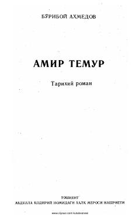

ATBuyuk sarkarda Amir Temur hayoti va faoliyatiga bag'ishlangan tarixiy roman.
Ushbu tarixiy roman taniqli olim va adib Bo'riboy Ahmedov tomonidan buyuk sarkarda Amir Temur hayoti va faoliyatiga bag'ishlab yozilgan. Asar Amir Temurning shaxsiyati, davlat arbobi sifatidagi o'rni va o'sha davr ijtimoiy-siyosiy muhitini badiiy talqinda yoritib beradi.